Topic 39: Natural Language Processing + Topic 28: Bayesian Classification#
06/03/21
onl01-dtsc-ft-022221
Learning Objectives (Part 1)#
Introduce the field of Natural Language Processing
Learn about the extensive preprocessing involved with text data
Walk through text classification - Finding Trump
Discuss how to use GridSearchCV for our text preprocessing/vectorization choices.
Questions#
Part 1 Topic 39: Natural Language Processing#
Natural Language Processing, or NLP, is the study of how computers can interact with humans through the use of human language. NLP has been around for quite a while, and sits at the intersection of Computer Science, Artificial Intelligence, Linguistics, and Information Theory.
Where is NLP Used?#
Reviews (i.e. Amazon)
AI Assistants - Google Duplex AI Assistant
Spam Detection
Stock market trading - Volvfefe Index
Chatbots/Text Generation GPT2 Blog Post
Working with Text Data#
To prepare text data for modeling, it is essential to preprocess the text and simplify its contents.
At a minimum, things like:
punctuation
numbers
upper vs lowercase letters
must be addressed before any initial analyses.
It is usually recommended to remove commonly used words that contain little information
for our machine learning algorithms. Words like: (the,was,he,she, it,etc.)
are called “stopwords”, and it is critical to address them as well.Our text will need to be separated in a list of words, AKA tokenized.
A list of words (tokens) separated by “,”, which tells the algorithm what should be considered one word.
There are different methods/tools for tokenizing the data, which can make a big difference on the resulting text.
While not always required, it is often a good idea to reduce similar words down to a shared core.
There are often multiple variants of the same word with the same/simiar meaning, but one may plural (i.e. “democrat” and “democrats”), or form of words is different (i.e. run, running).
Simplifying words down to the basic core word (or word stem) is referred to as “stemming”.

A more advanced form of this also understands things like words that are just in a different tense such as i.e. “ran”, “run”, “running”. This process is called “lemmatization, where the words are reduced to their simplest form, called “lemmas”
Word |
Stem |
Lemma |
|---|---|---|
Studies |
Studi |
Study |
Studying |
Study |
Study |
Finally, we have to convert our text data into numeric form for our machine learning models to analyze, a process called vectorization.
There are also several options for vectorization, which can also have a great impact on the resulting model.
Practice Preprocessing Text with Trump’s Tweets#
import pandas as pd
import numpy as np
import matplotlib.pyplot as plt
import seaborn as sns
sns.set_context('talk')
## NLP Imports
import nltk
from nltk import FreqDist,word_tokenize,regexp_tokenize,TweetTokenizer
from nltk.corpus import stopwords
import string
# !pip install wordcloud
from wordcloud import WordCloud
## Load in the finding-trump.csv
finding_trump = 'finding-trump.csv'
df = pd.read_csv(finding_trump)
df
| source | text | created_at | retweet_count | favorite_count | is_retweet | id_str | |
|---|---|---|---|---|---|---|---|
| 0 | Twitter Media Studio | https://t.co/EVAEYD1AgV | 01-01-2020 03:12:07 | 25016 | 108830 | False | 1212209862094012416 |
| 1 | Twitter for iPhone | HAPPY NEW YEAR! | 01-01-2020 01:30:35 | 85409 | 576045 | False | 1212184310389850119 |
| 2 | Twitter for iPhone | Our fantastic First Lady! https://t.co/6iswto4WDI | 01-01-2020 01:22:28 | 27567 | 132633 | False | 1212182267113680896 |
| 3 | Twitter for iPhone | RT @DanScavino: https://t.co/CJRPySkF1Z | 01-01-2020 01:18:47 | 10796 | 0 | True | 1212181341078458369 |
| 4 | Twitter for iPhone | RT @SenJohnKennedy: I think Speaker Pelosi is ... | 01-01-2020 01:17:43 | 8893 | 0 | True | 1212181071988703232 |
| ... | ... | ... | ... | ... | ... | ... | ... |
| 14061 | Twitter for Android | The President of Taiwan CALLED ME today to wis... | 12-03-2016 00:44:20 | 24700 | 111106 | False | 804848711599882240 |
| 14062 | Twitter for iPhone | Thank you Ohio! Together we made history – and... | 12-02-2016 02:45:18 | 17283 | 72196 | False | 804516764562374656 |
| 14063 | Twitter for iPhone | Heading to U.S. Bank Arena in Cincinnati Ohio ... | 12-01-2016 22:52:10 | 5564 | 31256 | False | 804458095569158144 |
| 14064 | Twitter for Android | Getting ready to leave for the Great State of ... | 12-01-2016 14:38:09 | 9834 | 57249 | False | 804333771021570048 |
| 14065 | Twitter for iPhone | My thoughts and prayers are with those affecte... | 12-01-2016 14:37:57 | 12077 | 65724 | False | 804333718999539712 |
14066 rows × 7 columns
## Create a variable "corpus" containing all text
corpus = df['text'].to_list()
## Preview first 5 entries
corpus[:5]
['Getting ready to leave for the Great State of Indiana and meet the hard working and wonderful people of Carrier A.C.',
'Heading to U.S. Bank Arena in Cincinnati Ohio for a 7pm rally. Join me! Tickets: https://t.co/HiWqZvHv6M',
'Thank you Ohio! Together we made history – and now the real work begins. America will start winning again!… https://t.co/sVNSNJE7Uf',
'The President of Taiwan CALLED ME today to wish me congratulations on winning the Presidency. Thank you!',
'Interesting how the U.S. sells Taiwan billions of dollars of military equipment but I should not accept a congratulatory call.']
Make a Bag-of-Words Frequency Distribution#
“bag-of-words”: collection of all words from a corpus and their frequencies
from nltk import FreqDist
# ','.join(corpus)
## Make a FreqDist from the corpus
freq = FreqDist(','.join(corpus))
## Display 100 most common words
freq.most_common(100)
[(' ', 11275),
('e', 5985),
('t', 4846),
('a', 4217),
('o', 4101),
('n', 3746),
('i', 3731),
('r', 3173),
('s', 3045),
('h', 2308),
('l', 2282),
('d', 1753),
('c', 1499),
('u', 1454),
('m', 1322),
('.', 1223),
('g', 1219),
('p', 1193),
('y', 1121),
('w', 1003),
('f', 903),
('b', 802),
(',', 602),
('/', 600),
('v', 547),
('T', 544),
('A', 543),
('k', 480),
('S', 438),
('I', 414),
('!', 389),
('N', 365),
('C', 357),
('E', 343),
(':', 330),
('M', 301),
('W', 281),
('R', 276),
('O', 272),
('P', 218),
('@', 210),
('D', 207),
('B', 200),
('F', 200),
('G', 193),
('0', 193),
('H', 191),
('L', 168),
('x', 166),
('J', 159),
('-', 159),
('U', 154),
('j', 138),
('1', 131),
('K', 127),
('"', 126),
("'", 120),
('2', 97),
('Y', 94),
('#', 85),
('V', 81),
('z', 74),
(';', 69),
('&', 67),
('6', 64),
('…', 63),
('4', 60),
('3', 59),
('7', 56),
('5', 56),
('(', 53),
(')', 53),
('8', 45),
('q', 43),
('Q', 43),
('9', 41),
('Z', 34),
('?', 34),
('X', 26),
('🇺', 18),
('🇸', 18),
('_', 11),
('$', 10),
('’', 8),
('%', 8),
('️', 7),
('–', 5),
('➡', 4),
('☀', 3),
('—', 3),
('+', 2),
('🇮', 2),
('🚂', 1),
('💨', 1),
('“', 1),
('”', 1),
('ō', 1),
('🇨', 1),
('🇦', 1),
('🇱', 1)]
That’s not quite right…
## Tokenize corpus then generate FreqDist
from nltk import word_tokenize
## Convert Corpus to Tokens
tokens = word_tokenize(','.join(corpus))
## Check first 5 tokens
print(tokens[:5])
['Getting', 'ready', 'to', 'leave', 'for']
## Get FreqDist and plot the 25 most_common tokens
freq = FreqDist(tokens)
freq.most_common(100)
[(',', 599),
('.', 444),
('the', 433),
('!', 389),
(':', 302),
('to', 301),
('and', 258),
('of', 214),
('@', 210),
('in', 186),
('https', 173),
('is', 167),
('a', 166),
('for', 122),
('will', 116),
('I', 114),
('be', 104),
('on', 97),
('with', 95),
('that', 87),
('#', 85),
('at', 84),
('The', 81),
('it', 81),
('you', 74),
('are', 72),
('-', 69),
(';', 69),
('``', 67),
('&', 67),
('amp', 67),
('our', 65),
('have', 61),
("''", 59),
('was', 59),
('my', 58),
('not', 55),
('great', 55),
('by', 54),
('(', 53),
(')', 53),
('me', 43),
('people', 41),
('all', 41),
("n't", 39),
('very', 39),
('this', 39),
('U.S.', 38),
('we', 38),
('Thank', 37),
('they', 37),
('...', 36),
('?', 34),
('out', 33),
('so', 33),
('from', 32),
('Trump', 32),
("'s", 32),
('country', 31),
('just', 30),
('We', 30),
('more', 29),
('election', 29),
('who', 29),
('has', 29),
('media', 29),
('A', 28),
('FAKE', 28),
('NEWS', 28),
('today', 27),
('but', 27),
('should', 27),
('or', 27),
('RT', 27),
('back', 26),
('It', 26),
('about', 26),
('do', 25),
('as', 25),
('an', 24),
('he', 24),
('going', 23),
('jobs', 23),
('many', 23),
('Obama', 23),
('Great', 22),
('up', 22),
('no', 22),
('time', 22),
('Russia', 22),
('President', 21),
('would', 21),
('GREAT', 21),
('big', 21),
('new', 20),
('their', 20),
("'", 20),
('bad', 20),
('can', 20),
('been', 20)]
freq.plot(25);
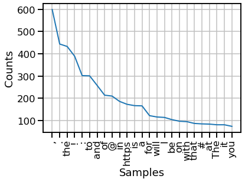
fig, ax = plt.subplots(figsize=(12,8))
freq.plot(25);
## Rotate
ax.set_xticklabels(ax.get_xticklabels(),
rotation=45,ha='right');
fig
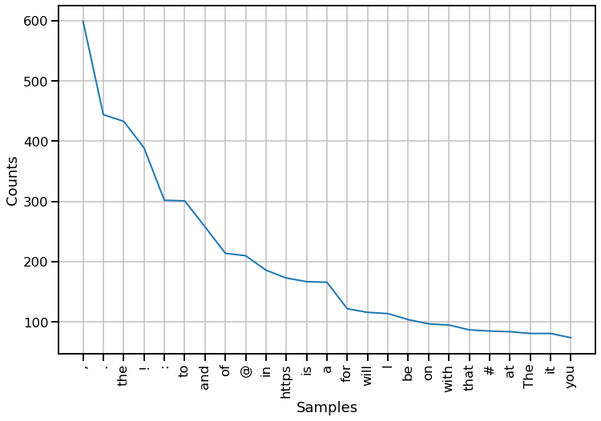
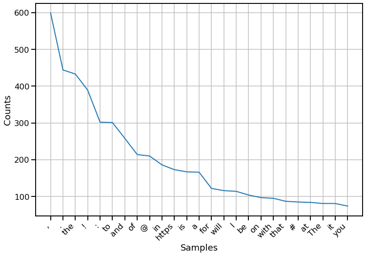
## Get the most_common 100 and make into a dataframe
most_common = pd.DataFrame(freq.most_common(100),
columns=['word','count']).sort_values('count',
ascending=True)
most_common.set_index('word').tail(25).plot(kind='barh',figsize=(12,5))
<AxesSubplot:ylabel='word'>
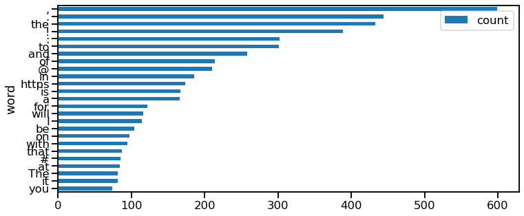
most_common
| word | count | |
|---|---|---|
| 99 | been | 20 |
| 94 | new | 20 |
| 95 | their | 20 |
| 98 | can | 20 |
| 97 | bad | 20 |
| ... | ... | ... |
| 4 | : | 302 |
| 3 | ! | 389 |
| 2 | the | 433 |
| 1 | . | 444 |
| 0 | , | 599 |
100 rows × 2 columns
def plot_most_common(freq,n=25,figsize=(12,5)):
most_common = pd.DataFrame(freq.most_common(n),
columns=['word','count']).sort_values('count',
ascending=True)
most_common.set_index('word').tail(n).plot(kind='barh',figsize=figsize)
plot_most_common(freq)
Dealing with URLs, RT’s, and @’s with TweetTokenizer#
from nltk import TweetTokenizer
tokenizer = TweetTokenizer(preserve_case=False,)
tweet_tokens = tokenizer.tokenize(','.join(corpus))
tweet_tokens[:20]
['getting',
'ready',
'to',
'leave',
'for',
'the',
'great',
'state',
'of',
'indiana',
'and',
'meet',
'the',
'hard',
'working',
'and',
'wonderful',
'people',
'of',
'carrier']
## Make a new freq dist for tweet tokens and plot most common
tweet_freq = FreqDist(tweet_tokens)
plot_most_common(tweet_freq)
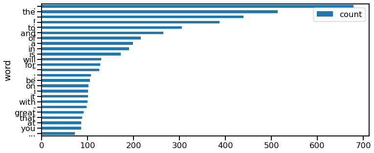
Better…but what’s our next issue?
## Make a list of stopwords to remove
from nltk.corpus import stopwords
import string
# Get all the stop words in the English language and preview first 10
stopwords_list = stopwords.words('english')
stopwords_list[:25]
['i',
'me',
'my',
'myself',
'we',
'our',
'ours',
'ourselves',
'you',
"you're",
"you've",
"you'll",
"you'd",
'your',
'yours',
'yourself',
'yourselves',
'he',
'him',
'his',
'himself',
'she',
"she's",
'her',
'hers']
## Add punctuation to stopwords_list
stopwords_list.extend(string.punctuation)
stopwords_list[-10:]
['[', '\\', ']', '^', '_', '`', '{', '|', '}', '~']
## Add the additional Tweet Punctuation below to stopwords_list
additional_punc = ['“','”','...',"''",'’','``']
stopwords_list.extend(additional_punc)
len(stopwords_list)
217
## Commentary on not always accepting what is or isn't in stopwords
print('until' in stopwords_list)
True
## Remove until from stopwords_list and check for it again
stopwords_list.remove('until')
print('until' in stopwords_list)
False
## Remove stopwords
stopped_tokens= [w.lower() for w in tweet_tokens if w.lower() not in stopwords_list]
stopped_tokens[:50]
['getting',
'ready',
'leave',
'great',
'state',
'indiana',
'meet',
'hard',
'working',
'wonderful',
'people',
'carrier',
'c',
'heading',
'u',
'bank',
'arena',
'cincinnati',
'ohio',
'7pm',
'rally',
'join',
'tickets',
'https://t.co/hiwqzvhv6m,thank',
'ohio',
'together',
'made',
'history',
'–',
'real',
'work',
'begins',
'america',
'start',
'winning',
'…',
'https://t.co/svnsnje7uf,the',
'president',
'taiwan',
'called',
'today',
'wish',
'congratulations',
'winning',
'presidency',
'thank',
'interesting',
'u',
'sells',
'taiwan']
## Remake the FreqDist from stopped_tokens
freq = FreqDist(stopped_tokens)
plot_most_common(freq,25)
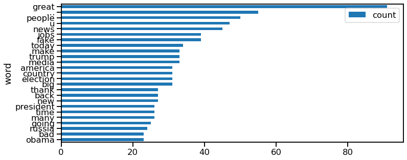
#### Appending our stopwords list
stopwords_list.extend(['…','rt','http','https','co'])
stopwords_list[-1]
'co'
## Remake the FreqDist from stopped_tokens
stopped_tokens= [w.lower() for w in tweet_tokens if w.lower() not in stopwords_list]
freq = FreqDist(stopped_tokens)
# freq.most_common(100)
plot_most_common(freq,25)
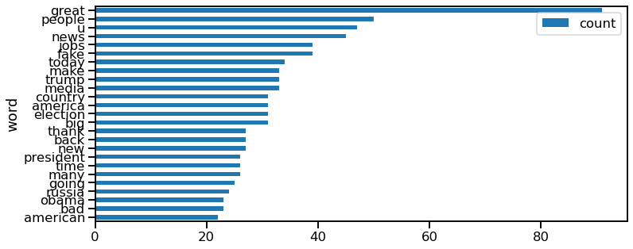
Additional Ways to Show Frequency#
from wordcloud import WordCloud
## Initalize a WordCloud with our stopwords_list and no bigrams
wordcloud = WordCloud(stopwords=stopwords_list,collocations=True)
## Generate wordcloud from stopped_tokens
wordcloud.generate(','.join(stopped_tokens))
## Plot with matplotlib
plt.figure(figsize = (12, 12), facecolor = None)
plt.imshow(wordcloud)
plt.axis('off')
(-0.5, 399.5, 199.5, -0.5)
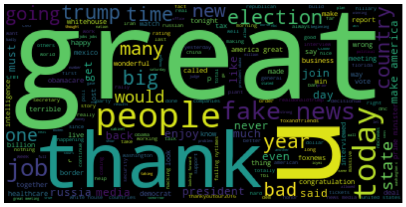
Comparing Phases of Proprocessing/Tokenization#
from ipywidgets import interact
@interact
def tokenize_tweet(i=(0,len(corpus)-1)):
from nltk.corpus import stopwords
import string
from nltk import word_tokenize,regexp_tokenize
print(f"- Tweet #{i}:\n")
print(corpus[i],'\n')
tokens = word_tokenize(corpus[i])
# Get all the stop words in the English language
stopwords_list = stopwords.words('english')
stopwords_list += string.punctuation
stopwords_list += additional_punc
stopped_tokens = [w.lower() for w in tokens if w.lower() not in stopwords_list]
print(tokens,end='\n\n')
print(stopped_tokens)
What recognizable pattern of characters is high on the frequency list?
Other Bag of Words Statistics#
Bigrams#
import nltk
bigram_measures = nltk.collocations.BigramAssocMeasures()
tweet_finder = nltk.BigramCollocationFinder.from_words(stopped_tokens)
tweets_scored = tweet_finder.score_ngrams(bigram_measures.raw_freq)
## Make a DataFrame from the Bigrams
pd.DataFrame(tweets_scored, columns=["Word","Freq"]).head(10)
| Word | Freq | |
|---|---|---|
| 0 | (fake, news) | 0.005118 |
| 1 | (make, america) | 0.002632 |
| 2 | (🇺, 🇸) | 0.002632 |
| 3 | (america, great) | 0.002486 |
| 4 | (prime, minister) | 0.001901 |
| 5 | (failing, @nytimes) | 0.001608 |
| 6 | (white, house) | 0.001608 |
| 7 | (united, states) | 0.001462 |
| 8 | (news, media) | 0.001316 |
| 9 | (president, obama) | 0.001170 |
Mutual Information Scores#
bigram_measures = nltk.collocations.BigramAssocMeasures()
tweet_pmi_finder = nltk.BigramCollocationFinder.from_words(stopped_tokens)
tweet_pmi_finder.apply_freq_filter(3)
tweet_pmi_scored = tweet_pmi_finder.score_ngrams(bigram_measures.pmi)
## Make a DataFrame from the Bigrams with PMI
pd.DataFrame(tweet_pmi_scored,columns=['Words','PMI']).head(20)
| Words | PMI | |
|---|---|---|
| 0 | (arnold, schwarzenegger) | 11.154607 |
| 1 | (demand, second) | 11.154607 |
| 2 | (extreme, vetting) | 11.154607 |
| 3 | (jeff, sessions) | 11.154607 |
| 4 | (julian, assange) | 11.154607 |
| 5 | (lincoln, memorial) | 11.154607 |
| 6 | (listening, session) | 11.154607 |
| 7 | (nashville, tennessee) | 11.154607 |
| 8 | (simple, rules) | 11.154607 |
| 9 | (daughter, ivanka) | 10.739570 |
| 10 | (rex, tillerson) | 10.739570 |
| 11 | (➡, ️https) | 10.739570 |
| 12 | (air, force) | 10.739570 |
| 13 | (electoral, college) | 10.739570 |
| 14 | (8:, 00) | 10.417642 |
| 15 | (ready, leave) | 10.417642 |
| 16 | (second, investigation) | 10.417642 |
| 17 | (close, ties) | 10.324532 |
| 18 | (pelosi, close) | 10.324532 |
| 19 | (f, 35) | 10.002604 |
Regular Expressions [ Skippable]#
Regular expressions can help us capture/remove complicated patterns in our text.
Best regexp resource and tester: https://regex101.com/
Make sure to check “Python” under Flavor menu on left side.
Let’s use regular expressions to remove URLs
len(corpus)
603
## Select an example tweet
text = corpus[602]
text
'Watch @JudgeJeanine on @FoxNews tonight at 9:00 P.M.'
## Select a second example tweet
text2=corpus[201]
text2
'An old picture with Nancy and Ronald Reagan. https://t.co/8kvQ1PzPAf'
## From tjhe lessons
from nltk import regexp_tokenize
pattern = r"([a-zA-Z]+(?:'[a-z]+)?)"
regexp_tokenize(text,pattern)
['Watch', 'JudgeJeanine', 'on', 'FoxNews', 'tonight', 'at', 'P', 'M']
Let’s use regex to find/remove URLS#
-
Copy and paste example text to search
Test out regular expressions and see what they pick up
print(text,text2)
Watch @JudgeJeanine on @FoxNews tonight at 9:00 P.M. An old picture with Nancy and Ronald Reagan. https://t.co/8kvQ1PzPAf
import re
re.findall(r"(https://\w*\.\w*/+\w+)",text2)
['https://t.co/8kvQ1PzPAf']
def clean_text(text,regex=True):
from nltk.corpus import stopwords
import string
from nltk import word_tokenize,regexp_tokenize
## tokenize text
if regex:
pattern = r"([a-zA-Z]+(?:'[a-z]+)?)"
tokens= regexp_tokenize(text,pattern)
else:
tokens = word_tokenize(text)
# Get all the stop words in the English language
stopwords_list = stopwords.words('english')
stopwords_list += string.punctuation
stopped_tokens = [w.lower() for w in tokens if w not in stopwords_list]
return stopped_tokens
## Other uses of RegEx for Tweet preprocessing
import re
def find_urls(string):
return re.findall(r"(http[s]?://\w*\.\w*/+\w+)",string)
def find_hashtags(string):
return re.findall(r'\#\w*',string)
def find_retweets(string):
return re.findall(r'RT [@]?\w*:',string)
def find_mentions(string):
return re.findall(r'\@\w*',string)
text
'Watch @JudgeJeanine on @FoxNews tonight at 9:00 P.M.'
find_urls(text)
[]
find_mentions(text2)
[]
Stemming/Lemmatization#
from nltk.stem.wordnet import WordNetLemmatizer
lemmatizer = WordNetLemmatizer()
print(lemmatizer.lemmatize('feet')) # foot
print(lemmatizer.lemmatize('running')) # run [?!] Does not match expected output
foot
running
# text_in = corpus[6615]
# text_in
# def process_tweet(text,as_lemmas=False,as_tokens=True):
# # text=text.copy()
# for x in find_urls(text):
# text = text.replace(x,'')
# for x in find_retweets(text):
# text = text.replace(x,'')
# for x in find_hashtags(text):
# text = text.replace(x,'')
# if as_lemmas:
# from nltk.stem.wordnet import WordNetLemmatizer
# lemmatizer = WordNetLemmatizer()
# text = lemmatizer.lemmatize(text)
# if as_tokens:
# text = clean_text(text)
# if len(text)==0:
# text=''
# return text
# @interact
# def show_processed_text(i=(0,len(corpus)-1)):
# text_in = corpus[i]#.copy()
# print(text_in)
# text_out = process_tweet(text_in)
# print(text_out)
# text_out2 = process_tweet(text_in,as_lemmas=True)
# print(text_out2)
# corpus[:6]
Text Vectorization#
For computers to process text it needs to be converted to a numerical representation of the text.
There are several different ways we can vectorize our text:
Count vectorization
Term Frequency-Inverse Document Frequency (TF-IDF)
Used for multiple texts
Word Embeddings (Deep NLP)
Term Frequency is calculated with the following formula: $\( \text{Term Frequency}(t) = \frac{\text{number of times it appears in a document}} {\text{total number of terms in the document}} \)$
Which can also be represented as: $\(\begin{align} \text{tf}_{i,j} = \dfrac{n_{i,j}}{\displaystyle \sum_k n_{i,j} } \end{align} \)$
Inverse Document Frequency is calculated with the following formula: $\( IDF(t) = log_e(\frac{\text{Total Number of Documents}}{\text{Number of Documents with it in it}})\)$
Which can also be represented as: $\(\begin{align} idf(w) = \log \dfrac{N}{df_t} \end{align} \)$
The TF-IDF value for a given word in a given document is just found by multiplying the two! $\( \begin{align} w_{i,j} = tf_{i,j} \times \log \dfrac{N}{df_i} \\ tf_{i,j} = \text{number of occurences of } i \text{ in} j \\ df_i = \text{number of documents containing } i \\ N = \text{total number of documents} \end{align} \)$
There are additional ways to vectorize using Deep Neural Networks to create Word Embeddings (see Module 4 > Appendix: Deep NLP)
Summary: Feature Engineering for Text Data#
Do we remove stop words or not?
Do we stem or lemmatize our text data, or leave the words as is?
Is basic tokenization enough, or do we need to support special edge cases through the use of regex?
Do we use the entire vocabulary, or just limit the model to a subset of the most frequently used words? If so, how many?
Do we engineer other features, such as bigrams, or POS tags, or Mutual Information Scores?
What sort of vectorization should we use in our model? Boolean Vectorization? Count Vectorization? TF-IDF? More advanced vectorization strategies such as Word2Vec?
ACTIVITY: Text Classification - Finding Trump#
The Task - Finding Trump#
All presidents have staffers help maintain their social media presence on their behalf.
Early During His Presidency, Donald Trump refused to stop using his insecure and unofficial Android Phone
During this time period, his staffers were the ones Tweeting from the official presidential iPhone.
Therefore, if we isolate our dataset to ONLY the times where Trump’s account was posting from BOTH android and iphone, we can then assume that Android Tweets are Trump and that iPhone tweets are his staffers.
Now that we know that… let’s build a NLP classification model to Find Trump!#
import nltk
from sklearn.feature_extraction.text import TfidfVectorizer,CountVectorizer
from sklearn.ensemble import RandomForestClassifier
from sklearn import metrics
from sklearn.model_selection import train_test_split,GridSearchCV
from sklearn.pipeline import Pipeline
from sklearn.feature_extraction.text import CountVectorizer,TfidfTransformer #TfidfVectorizer
from sklearn.ensemble import RandomForestClassifier
from sklearn.naive_bayes import MultinomialNB
import pandas as pd
## Load in the df with created_at as dt index
finding_trump = 'finding-trump.csv'
df = pd.read_csv(finding_trump, index_col='created_at',
parse_dates=['created_at'])
df.sort_index(inplace=True)
df.head()
| source | text | retweet_count | favorite_count | is_retweet | id_str | |
|---|---|---|---|---|---|---|
| created_at | ||||||
| 2016-12-01 14:37:57 | Twitter for iPhone | My thoughts and prayers are with those affecte... | 12077 | 65724 | False | 804333718999539712 |
| 2016-12-01 14:38:09 | Twitter for Android | Getting ready to leave for the Great State of ... | 9834 | 57249 | False | 804333771021570048 |
| 2016-12-01 22:52:10 | Twitter for iPhone | Heading to U.S. Bank Arena in Cincinnati Ohio ... | 5564 | 31256 | False | 804458095569158144 |
| 2016-12-02 02:45:18 | Twitter for iPhone | Thank you Ohio! Together we made history – and... | 17283 | 72196 | False | 804516764562374656 |
| 2016-12-03 00:44:20 | Twitter for Android | The President of Taiwan CALLED ME today to wis... | 24700 | 111106 | False | 804848711599882240 |
## Check Value Counts for Source
df['source'].value_counts()
Twitter for iPhone 13277
Twitter for Android 364
Media Studio 153
Twitter Media Studio 136
Twitter Web Client 61
Twitter for iPad 38
Twitter Ads 33
Twitter Web App 4
Name: source, dtype: int64
## Get time period where Trump still had his personal Android
index = df[ df['source']=='Twitter for Android'].index
index
DatetimeIndex(['2016-12-01 14:38:09', '2016-12-03 00:44:20',
'2016-12-03 01:41:30', '2016-12-03 03:06:41',
'2016-12-03 16:37:27', '2016-12-04 05:13:58',
'2016-12-04 11:41:47', '2016-12-04 11:49:06',
'2016-12-04 11:57:41', '2016-12-04 12:05:35',
...
'2017-03-05 11:40:20', '2017-03-07 12:04:13',
'2017-03-07 12:13:59', '2017-03-07 13:13:20',
'2017-03-07 13:41:58', '2017-03-07 13:46:28',
'2017-03-07 14:14:03', '2017-03-08 12:11:25',
'2017-03-25 14:37:52', '2017-03-25 14:41:14'],
dtype='datetime64[ns]', name='created_at', length=364, freq=None)
## Get Start_ts and end_ts
start_ts,end_ts = index[0],index[-1]
start_ts,end_ts
(Timestamp('2016-12-01 14:38:09'), Timestamp('2017-03-25 14:41:14'))
## Slice out the data from start_ts to end_ts
df = df.loc[start_ts:end_ts]
df
| source | text | retweet_count | favorite_count | is_retweet | id_str | |
|---|---|---|---|---|---|---|
| created_at | ||||||
| 2016-12-01 14:38:09 | Twitter for Android | Getting ready to leave for the Great State of ... | 9834 | 57249 | False | 804333771021570048 |
| 2016-12-01 22:52:10 | Twitter for iPhone | Heading to U.S. Bank Arena in Cincinnati Ohio ... | 5564 | 31256 | False | 804458095569158144 |
| 2016-12-02 02:45:18 | Twitter for iPhone | Thank you Ohio! Together we made history – and... | 17283 | 72196 | False | 804516764562374656 |
| 2016-12-03 00:44:20 | Twitter for Android | The President of Taiwan CALLED ME today to wis... | 24700 | 111106 | False | 804848711599882240 |
| 2016-12-03 01:41:30 | Twitter for Android | Interesting how the U.S. sells Taiwan billions... | 38805 | 122905 | False | 804863098138005504 |
| ... | ... | ... | ... | ... | ... | ... |
| 2017-03-24 17:03:46 | Twitter for iPhone | Today I was pleased to announce the official a... | 12933 | 66692 | False | 845320243614547968 |
| 2017-03-24 17:59:42 | Twitter for iPhone | Today I was thrilled to announce a commitment ... | 20212 | 89339 | False | 845334323045765121 |
| 2017-03-25 13:29:17 | Twitter for iPhone | Happy #MedalOfHonorDay to our heroes! ➡️https:... | 14139 | 68302 | False | 845628655493677056 |
| 2017-03-25 14:37:52 | Twitter for Android | ObamaCare will explode and we will all get tog... | 22518 | 104321 | False | 845645916732358656 |
| 2017-03-25 14:41:14 | Twitter for Android | Watch @JudgeJeanine on @FoxNews tonight at 9:0... | 10116 | 51247 | False | 845646761704243200 |
617 rows × 6 columns
## Check new value counts
df['source'].value_counts(1)
Twitter for Android 0.589951
Twitter for iPhone 0.387358
Twitter Web Client 0.022690
Name: source, dtype: float64
## Remove the Web tweets
df = df[df['source'] != 'Twitter Web Client']
df
| source | text | retweet_count | favorite_count | is_retweet | id_str | |
|---|---|---|---|---|---|---|
| created_at | ||||||
| 2016-12-01 14:38:09 | Twitter for Android | Getting ready to leave for the Great State of ... | 9834 | 57249 | False | 804333771021570048 |
| 2016-12-01 22:52:10 | Twitter for iPhone | Heading to U.S. Bank Arena in Cincinnati Ohio ... | 5564 | 31256 | False | 804458095569158144 |
| 2016-12-02 02:45:18 | Twitter for iPhone | Thank you Ohio! Together we made history – and... | 17283 | 72196 | False | 804516764562374656 |
| 2016-12-03 00:44:20 | Twitter for Android | The President of Taiwan CALLED ME today to wis... | 24700 | 111106 | False | 804848711599882240 |
| 2016-12-03 01:41:30 | Twitter for Android | Interesting how the U.S. sells Taiwan billions... | 38805 | 122905 | False | 804863098138005504 |
| ... | ... | ... | ... | ... | ... | ... |
| 2017-03-24 17:03:46 | Twitter for iPhone | Today I was pleased to announce the official a... | 12933 | 66692 | False | 845320243614547968 |
| 2017-03-24 17:59:42 | Twitter for iPhone | Today I was thrilled to announce a commitment ... | 20212 | 89339 | False | 845334323045765121 |
| 2017-03-25 13:29:17 | Twitter for iPhone | Happy #MedalOfHonorDay to our heroes! ➡️https:... | 14139 | 68302 | False | 845628655493677056 |
| 2017-03-25 14:37:52 | Twitter for Android | ObamaCare will explode and we will all get tog... | 22518 | 104321 | False | 845645916732358656 |
| 2017-03-25 14:41:14 | Twitter for Android | Watch @JudgeJeanine on @FoxNews tonight at 9:0... | 10116 | 51247 | False | 845646761704243200 |
603 rows × 6 columns
## Make new Trump Tweet Column of 0 and 1s
df['trump_tweet'] = (df['source'] == 'Twitter for Android').astype(int)
df['trump_tweet'].value_counts(1)
<ipython-input-86-b41e70b2c595>:2: SettingWithCopyWarning:
A value is trying to be set on a copy of a slice from a DataFrame.
Try using .loc[row_indexer,col_indexer] = value instead
See the caveats in the documentation: https://pandas.pydata.org/pandas-docs/stable/user_guide/indexing.html#returning-a-view-versus-a-copy
df['trump_tweet'] = (df['source'] == 'Twitter for Android').astype(int)
1 0.603648
0 0.396352
Name: trump_tweet, dtype: float64
Preprocessing#
## Make X and y
y = df['trump_tweet'].copy()
X = df['text'].copy()
X
created_at
2016-12-01 14:38:09 Getting ready to leave for the Great State of ...
2016-12-01 22:52:10 Heading to U.S. Bank Arena in Cincinnati Ohio ...
2016-12-02 02:45:18 Thank you Ohio! Together we made history – and...
2016-12-03 00:44:20 The President of Taiwan CALLED ME today to wis...
2016-12-03 01:41:30 Interesting how the U.S. sells Taiwan billions...
...
2017-03-24 17:03:46 Today I was pleased to announce the official a...
2017-03-24 17:59:42 Today I was thrilled to announce a commitment ...
2017-03-25 13:29:17 Happy #MedalOfHonorDay to our heroes! ➡️https:...
2017-03-25 14:37:52 ObamaCare will explode and we will all get tog...
2017-03-25 14:41:14 Watch @JudgeJeanine on @FoxNews tonight at 9:0...
Name: text, Length: 603, dtype: object
## Train Test Split (random state=42)
X_train, X_test, y_train, y_test = train_test_split(X,y, test_size=0.3,
random_state=42)
X_train
created_at
2017-01-20 17:54:36 We will bring back our jobs. We will bring bac...
2017-03-25 14:41:14 Watch @JudgeJeanine on @FoxNews tonight at 9:0...
2017-02-25 21:53:21 I will not be attending the White House Corres...
2017-02-15 19:17:59 Welcome to the United States @IsraeliPM Benjam...
2017-03-15 10:55:30 Does anybody really believe that a reporter wh...
...
2016-12-15 22:27:16 Join me in Mobile Alabama on Sat. at 3pm! #Tha...
2016-12-24 00:13:02 Vladimir Putin said today about Hillary and De...
2017-01-20 17:53:17 January 20th 2017 will be remembered as the da...
2017-02-15 13:13:10 The real scandal here is that classified infor...
2016-12-23 11:58:36 my presidency. Isn't this a ridiculous shame? ...
Name: text, Length: 422, dtype: object
## Check y_train value counts
y_train.value_counts(1)
1 0.604265
0 0.395735
Name: trump_tweet, dtype: float64
Tokenization & Vectorization#
## Make a TweekTokenizer from nltk.tokenize (preserve_case=False)
tokenizer = TweetTokenizer(preserve_case=False)
## Make a TfIdf Vectorizer using tweet tokenizer's .tokenize method
vectorizer = TfidfVectorizer(tokenizer=tokenizer.tokenize,
stop_words=stopwords_list)
# Vectorize data and make X_train_tfidf and X_test_tfidf
X_train_tfidf = vectorizer.fit_transform(X_train)
X_test_tfidf = vectorizer.transform(X_test)
X_train_tfidf
<422x2094 sparse matrix of type '<class 'numpy.float64'>'
with 4689 stored elements in Compressed Sparse Row format>
## Compare the shape of X_train to X_train_tfidf
X_train.shape
(422,)
## Check the len of the vectorizer's vocabulary
len(vectorizer.vocabulary_)
2094
Modeling#
RandomForest (Baseline)#
## Make and fit a random forest (class_weight='balanced')
rf = RandomForestClassifier(class_weight='balanced')
rf.fit(X_train_tfidf,y_train)
RandomForestClassifier(class_weight='balanced')
def evaluate_classification(model, X_test_tf,y_test,cmap='Greens',
normalize='true',classes=None,figsize=(10,4),
X_train = None, y_train = None,):
"""Evaluates a scikit-learn binary classification model.
Args:
model (classifier): any sklearn classification model.
X_test_tf (Frame or Array): X data
y_test (Series or Array): y data
cmap (str, optional): Colormap for confusion matrix. Defaults to 'Greens'.
normalize (str, optional): normalize argument for plot_confusion_matrix.
Defaults to 'true'.
classes (list, optional): List of class names for display. Defaults to None.
figsize (tuple, optional): figure size Defaults to (8,4).
X_train (Frame or Array, optional): If provided, compare model.score
for train and test. Defaults to None.
y_train (Series or Array, optional): If provided, compare model.score
for train and test. Defaults to None.
"""
## Get Predictions and Classification Report
y_hat_test = model.predict(X_test_tf)
print(metrics.classification_report(y_test, y_hat_test,target_names=classes))
## Plot Confusion Matrid and roc curve
fig,ax = plt.subplots(ncols=2, figsize=figsize)
metrics.plot_confusion_matrix(model, X_test_tf,y_test,cmap=cmap,
normalize=normalize,display_labels=classes,
ax=ax[0])
## if roc curve erorrs, delete second ax
try:
curve = metrics.plot_roc_curve(model,X_test_tf,y_test,ax=ax[1])
curve.ax_.grid()
curve.ax_.plot([0,1],[0,1],ls=':')
fig.tight_layout()
except:
fig.delaxes(ax[1])
plt.show()
## Add comparing Scores if X_train and y_train provided.
if (X_train is not None) & (y_train is not None):
print(f"Training Score = {model.score(X_train,y_train):.2f}")
print(f"Test Score = {model.score(X_test_tf,y_test):.2f}")
def plot_importance(tree, X_train_df, top_n=20,figsize=(10,10)):
df_importance = pd.Series(tree.feature_importances_,
index=X_train_df.columns)
df_importance.sort_values(ascending=True).tail(top_n).plot(
kind='barh',figsize=figsize,title='Feature Importances',
ylabel='Feature',)
return df_importance
## Evaluate Model using function
evaluate_classification(rf,X_test_tfidf,y_test,X_train=X_train_tfidf,y_train=y_train)
precision recall f1-score support
0 0.78 0.64 0.70 72
1 0.79 0.88 0.83 109
accuracy 0.78 181
macro avg 0.78 0.76 0.77 181
weighted avg 0.78 0.78 0.78 181
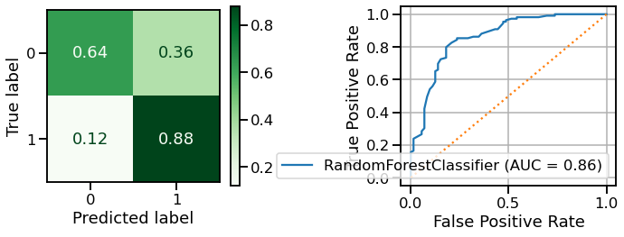
Training Score = 1.00
Test Score = 0.78
pd.DataFrame(X_train_tfidf.todense(), columns=vectorizer.get_feature_names())
| #1in | #americafirst | #draintheswam | #fakenews | #godblesstheusa | #hannity | #icymi | #inauguration | #inauguration2017 | ... | ➡ | ️ | ️https | ️thank | 🇦 | 🇨 | 🇮 | 🇱 | 🇸 | 🇺 | ||
|---|---|---|---|---|---|---|---|---|---|---|---|---|---|---|---|---|---|---|---|---|---|
| 0 | 0.0 | 0.0 | 0.0 | 0.0 | 0.0 | 0.0 | 0.0 | 0.000000 | 0.0 | 0.0 | ... | 0.0 | 0.0 | 0.0 | 0.0 | 0.0 | 0.0 | 0.000000 | 0.000000 | 0.000000 | 0.000000 |
| 1 | 0.0 | 0.0 | 0.0 | 0.0 | 0.0 | 0.0 | 0.0 | 0.000000 | 0.0 | 0.0 | ... | 0.0 | 0.0 | 0.0 | 0.0 | 0.0 | 0.0 | 0.000000 | 0.000000 | 0.000000 | 0.000000 |
| 2 | 0.0 | 0.0 | 0.0 | 0.0 | 0.0 | 0.0 | 0.0 | 0.000000 | 0.0 | 0.0 | ... | 0.0 | 0.0 | 0.0 | 0.0 | 0.0 | 0.0 | 0.000000 | 0.000000 | 0.000000 | 0.000000 |
| 3 | 0.0 | 0.0 | 0.0 | 0.0 | 0.0 | 0.0 | 0.0 | 0.237751 | 0.0 | 0.0 | ... | 0.0 | 0.0 | 0.0 | 0.0 | 0.0 | 0.0 | 0.277812 | 0.277812 | 0.212053 | 0.212053 |
| 4 | 0.0 | 0.0 | 0.0 | 0.0 | 0.0 | 0.0 | 0.0 | 0.000000 | 0.0 | 0.0 | ... | 0.0 | 0.0 | 0.0 | 0.0 | 0.0 | 0.0 | 0.000000 | 0.000000 | 0.000000 | 0.000000 |
| ... | ... | ... | ... | ... | ... | ... | ... | ... | ... | ... | ... | ... | ... | ... | ... | ... | ... | ... | ... | ... | ... |
| 417 | 0.0 | 0.0 | 0.0 | 0.0 | 0.0 | 0.0 | 0.0 | 0.000000 | 0.0 | 0.0 | ... | 0.0 | 0.0 | 0.0 | 0.0 | 0.0 | 0.0 | 0.000000 | 0.000000 | 0.000000 | 0.000000 |
| 418 | 0.0 | 0.0 | 0.0 | 0.0 | 0.0 | 0.0 | 0.0 | 0.000000 | 0.0 | 0.0 | ... | 0.0 | 0.0 | 0.0 | 0.0 | 0.0 | 0.0 | 0.000000 | 0.000000 | 0.000000 | 0.000000 |
| 419 | 0.0 | 0.0 | 0.0 | 0.0 | 0.0 | 0.0 | 0.0 | 0.000000 | 0.0 | 0.0 | ... | 0.0 | 0.0 | 0.0 | 0.0 | 0.0 | 0.0 | 0.000000 | 0.000000 | 0.000000 | 0.000000 |
| 420 | 0.0 | 0.0 | 0.0 | 0.0 | 0.0 | 0.0 | 0.0 | 0.000000 | 0.0 | 0.0 | ... | 0.0 | 0.0 | 0.0 | 0.0 | 0.0 | 0.0 | 0.000000 | 0.000000 | 0.000000 | 0.000000 |
| 421 | 0.0 | 0.0 | 0.0 | 0.0 | 0.0 | 0.0 | 0.0 | 0.000000 | 0.0 | 0.0 | ... | 0.0 | 0.0 | 0.0 | 0.0 | 0.0 | 0.0 | 0.000000 | 0.000000 | 0.000000 | 0.000000 |
422 rows × 2094 columns
# Plot the top 30 most important features
with plt.style.context('seaborn-talk'):
## Get Feature Importance
importance = pd.Series(rf.feature_importances_,
index=vectorizer.get_feature_names())
## Take the .tail 30 and plot kind='barh'
importance.sort_values().tail(30).plot(kind='barh')
/opt/anaconda3/envs/learn-env-new/lib/python3.8/site-packages/matplotlib/backends/backend_agg.py:238: RuntimeWarning: Glyph 127482 missing from current font.
font.set_text(s, 0.0, flags=flags)
/opt/anaconda3/envs/learn-env-new/lib/python3.8/site-packages/matplotlib/backends/backend_agg.py:238: RuntimeWarning: Glyph 127480 missing from current font.
font.set_text(s, 0.0, flags=flags)
/opt/anaconda3/envs/learn-env-new/lib/python3.8/site-packages/matplotlib/backends/backend_agg.py:201: RuntimeWarning: Glyph 127482 missing from current font.
font.set_text(s, 0, flags=flags)
/opt/anaconda3/envs/learn-env-new/lib/python3.8/site-packages/matplotlib/backends/backend_agg.py:201: RuntimeWarning: Glyph 127480 missing from current font.
font.set_text(s, 0, flags=flags)
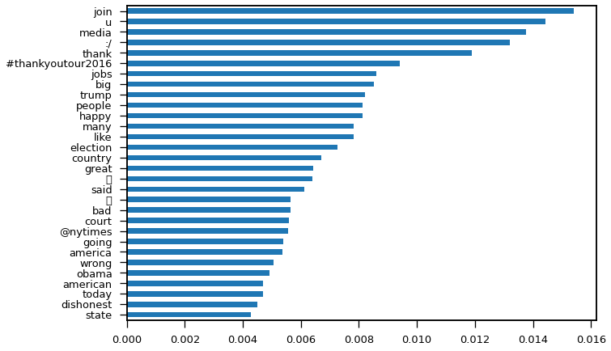
Pipelines and GridSearch for NLP#
You may want to to this process in multiple steps (first Count Vectorize, then transform to TF or TF-IDF.
Can then use these in a Pipeline to be able to GridSearch more aspects of the text preprocessing
from sklearn.feature_extraction.text import CountVectorizer,TfidfTransformer #TfidfVectorizer
from sklearn.pipeline import Pipeline
text_pipe = Pipeline(steps=[
('count_vectorizer',CountVectorizer()),
('tf_transformer',TfidfTransformer(use_idf=False))
])
from sklearn import set_config
set_config(display='diagram')
## Make a text preprocessing pipeline
text_pipe = Pipeline(steps=[
('count_vectorizer',CountVectorizer()),
('tf_transformer',TfidfTransformer(use_idf=True))
])
text_pipe
Pipeline(steps=[('count_vectorizer', CountVectorizer()),
('tf_transformer', TfidfTransformer())])CountVectorizer()
TfidfTransformer()
## Remind ourselves what X_train looks like
X_train
created_at
2017-01-20 17:54:36 We will bring back our jobs. We will bring bac...
2017-03-25 14:41:14 Watch @JudgeJeanine on @FoxNews tonight at 9:0...
2017-02-25 21:53:21 I will not be attending the White House Corres...
2017-02-15 19:17:59 Welcome to the United States @IsraeliPM Benjam...
2017-03-15 10:55:30 Does anybody really believe that a reporter wh...
...
2016-12-15 22:27:16 Join me in Mobile Alabama on Sat. at 3pm! #Tha...
2016-12-24 00:13:02 Vladimir Putin said today about Hillary and De...
2017-01-20 17:53:17 January 20th 2017 will be remembered as the da...
2017-02-15 13:13:10 The real scandal here is that classified infor...
2016-12-23 11:58:36 my presidency. Isn't this a ridiculous shame? ...
Name: text, Length: 422, dtype: object
## Test out the text pipeline on X_train
X_train_pipe = text_pipe.fit_transform(X_train)
X_test_pipe = text_pipe.transform(X_test)
X_train_pipe
<422x2127 sparse matrix of type '<class 'numpy.float64'>'
with 7709 stored elements in Compressed Sparse Row format>
## Make a full pipeline with the random forest model as the second step
full_pipe = Pipeline([('text_pipe',text_pipe),
('clf',RandomForestClassifier(class_weight='balanced'))])
full_pipe
Pipeline(steps=[('text_pipe',
Pipeline(steps=[('count_vectorizer', CountVectorizer()),
('tf_transformer', TfidfTransformer())])),
('clf', RandomForestClassifier(class_weight='balanced'))])Pipeline(steps=[('count_vectorizer', CountVectorizer()),
('tf_transformer', TfidfTransformer())])CountVectorizer()
TfidfTransformer()
RandomForestClassifier(class_weight='balanced')
## Modeling with full pipeline
full_pipe.fit(X_train,y_train)
evaluate_classification(full_pipe,X_test,y_test,X_train=X_train, y_train=y_train)
precision recall f1-score support
0 0.98 0.75 0.85 72
1 0.86 0.99 0.92 109
accuracy 0.90 181
macro avg 0.92 0.87 0.88 181
weighted avg 0.91 0.90 0.89 181
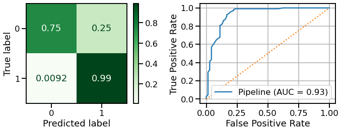
Training Score = 1.00
Test Score = 0.90
GridSearching NLP Pipeline#
set_config(display='text')
full_pipe.named_steps
{'text_pipe': Pipeline(steps=[('count_vectorizer', CountVectorizer()),
('tf_transformer', TfidfTransformer())]),
'clf': RandomForestClassifier(class_weight='balanced')}
full_pipe.named_steps['text_pipe']
Pipeline(steps=[('count_vectorizer', CountVectorizer()),
('tf_transformer', TfidfTransformer())])
## Make a tokenizer with TweetTokenizer
## Make params grid
## transformer params: use_idf/norm,smooth_idf
### tokenizers: try different TweetTokeinzier
## Vectorizer:stop_wqords/max_df/min_df,
## randomforest: criterin/max_depth
params = {'text_pipe__tf_transformer__use_idf':[True,False],
'text_pipe__tf_transformer__norm':['l2','l1'],
'text_pipe__tf_transformer__smooth_idf':[True,False],
'text_pipe__count_vectorizer__stop_words':[stopwords_list,None],
# 'text_pipe__count_vectorizer__max_df':[1.0,0.95],
# 'text_pipe__count_vectorizer__min_df':[1,2,3],
'clf__criterion':['gini','entropy'],
'clf__max_depth':[None, 10, 30, 50]
}
## Make and fit grid
grid = GridSearchCV(full_pipe,
params, cv=3, scoring='recall',n_jobs=-1,verbose=2)
grid.fit(X_train,y_train)
## Display best params
grid.best_params_
Fitting 3 folds for each of 128 candidates, totalling 384 fits
[Parallel(n_jobs=-1)]: Using backend LokyBackend with 12 concurrent workers.
[Parallel(n_jobs=-1)]: Done 17 tasks | elapsed: 1.0s
[Parallel(n_jobs=-1)]: Done 138 tasks | elapsed: 4.6s
[Parallel(n_jobs=-1)]: Done 341 tasks | elapsed: 11.2s
[Parallel(n_jobs=-1)]: Done 384 out of 384 | elapsed: 12.9s finished
{'clf__criterion': 'gini',
'clf__max_depth': 50,
'text_pipe__count_vectorizer__stop_words': None,
'text_pipe__tf_transformer__norm': 'l2',
'text_pipe__tf_transformer__smooth_idf': True,
'text_pipe__tf_transformer__use_idf': True}
## Evluate the best_estimator
evaluate_classification(grid.best_estimator_, X_test,y_test,
X_train=X_train, y_train=y_train)
precision recall f1-score support
0 0.98 0.78 0.87 72
1 0.87 0.99 0.93 109
accuracy 0.91 181
macro avg 0.93 0.88 0.90 181
weighted avg 0.92 0.91 0.90 181
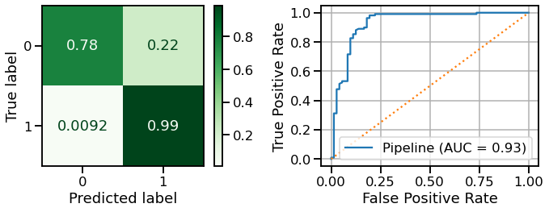
Training Score = 1.00
Test Score = 0.91
## Check the named steps for text_pipe, count_vectorizer, and get params
### evalaute the best pipe
Get feature importances as text#
## Make x-train and x-test from text_pipe
## Get CountVectorizer from pipe
## Get feature naames from vectorizer
## Check the len of features
## Check the length of feature importanceas
## Save feature importances as a series
## Plot feature importances
with plt.style.context('seaborn-talk'):
pass
## Saving the probability of most important words for each class
top_word_probs = {}
## Make into a df, transpose, and display
Part 2 Topic 28: Bayesian Classification#
Learning Objectives#
Understand how Bayes theorem can be applied to classify data using conditional probabilities.
Revisit our Topic 17 study group example of Maximum Likelihood Estimation.
Understand Gaussian Naive Bayes and how it uses the Probability Density Function of a Normal Distribution
Apply naive bayes for tabular data and text data
Document Classification with Naive Bayes - Finding Trump
Bayes Theorem Revisited#
The Bayesian interpretation of this formula is
Revisit Topic 17 MLE Example#
Gaussian Naive Bayes [Non-Text Data]#
Gaussian Naive Bayes makes the assumption that our probabilities follow a normal distribution.
It uses the Probability Density Function for a Normal (Gaussian) Distribution to get point estimates of the probabilities.
Note: above we used the normal distribution probability density function to estimate likelihood, which is essentiall what Guassian Naive Bayes does!!
from scipy import stats
from sklearn import datasets
iris = datasets.load_iris()
X = pd.DataFrame(iris.data)
X.columns = iris.feature_names
y = pd.DataFrame(iris.target)
y.columns = ['Target']
df = pd.concat([X, y], axis=1)
df.head()
| sepal length (cm) | sepal width (cm) | petal length (cm) | petal width (cm) | Target | |
|---|---|---|---|---|---|
| 0 | 5.1 | 3.5 | 1.4 | 0.2 | 0 |
| 1 | 4.9 | 3.0 | 1.4 | 0.2 | 0 |
| 2 | 4.7 | 3.2 | 1.3 | 0.2 | 0 |
| 3 | 4.6 | 3.1 | 1.5 | 0.2 | 0 |
| 4 | 5.0 | 3.6 | 1.4 | 0.2 | 0 |
## Getting names of flowers
target_map = dict(zip([0,1,2],iris.target_names))
df['Target'] = df['Target'].map(target_map)
df['Target'].value_counts(dropna=False)
virginica 50
setosa 50
versicolor 50
Name: Target, dtype: int64
## Train test split
X_tr, X_te,y_tr,y_te = train_test_split(X,y)
## Saving df-train for later
df_train = pd.concat([X_tr,y_tr],axis=1)
df_train['Target'] = df_train['Target'].map(target_map)
X_tr.head()
| sepal length (cm) | sepal width (cm) | petal length (cm) | petal width (cm) | |
|---|---|---|---|---|
| 123 | 6.3 | 2.7 | 4.9 | 1.8 |
| 132 | 6.4 | 2.8 | 5.6 | 2.2 |
| 56 | 6.3 | 3.3 | 4.7 | 1.6 |
| 92 | 5.8 | 2.6 | 4.0 | 1.2 |
| 28 | 5.2 | 3.4 | 1.4 | 0.2 |
## Checking Distribution of each feature by taargets
sns.set_context('notebook')
for col in X.columns:
sns.displot(data=df, x=col, kind='kde',hue='Target',aspect=1.5)
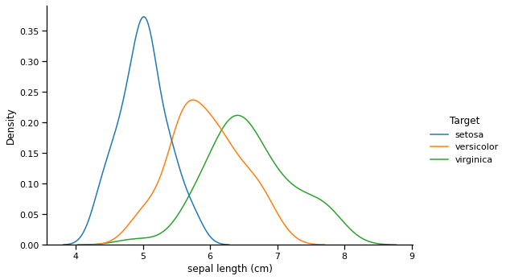
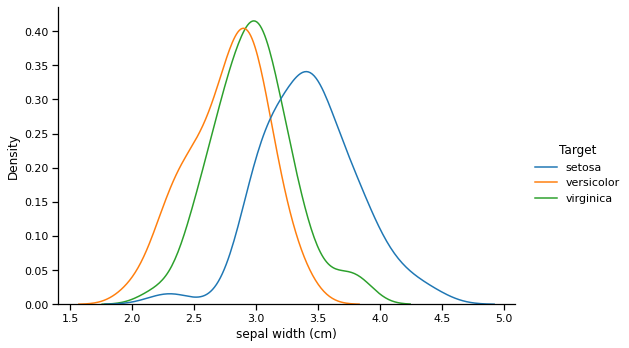
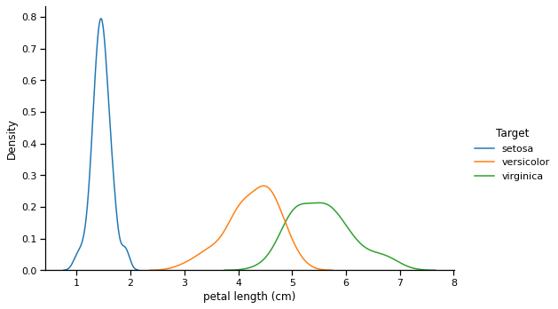
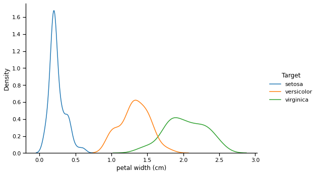
Each flower’s characteristics form a normal-ish distribution with a specific mean and std.
Using the Normal Distribution Probability Density function, we can calculate the likelihoods of a specific flower’s stats for each of our target classes.
Whichever likelihood is highest will determine the model’s prediction.
## Get the mean and std of each target
aggs = df_train.groupby('Target').agg(['mean', 'std'])
aggs
| sepal length (cm) | sepal width (cm) | petal length (cm) | petal width (cm) | |||||
|---|---|---|---|---|---|---|---|---|
| mean | std | mean | std | mean | std | mean | std | |
| Target | ||||||||
| setosa | 5.021053 | 0.326453 | 3.421053 | 0.384256 | 1.489474 | 0.172093 | 0.250000 | 0.108429 |
| versicolor | 5.973171 | 0.550011 | 2.819512 | 0.310016 | 4.287805 | 0.504081 | 1.353659 | 0.195061 |
| virginica | 6.703030 | 0.592919 | 2.972727 | 0.314516 | 5.645455 | 0.541463 | 2.042424 | 0.281769 |
## Selecting an example flower to examine
ex_flower_stats = df_train.iloc[20]
ex_flower_label = ex_flower_stats.pop('Target')
ex_flower_stats
sepal length (cm) 5
sepal width (cm) 2
petal length (cm) 3.5
petal width (cm) 1
Name: 60, dtype: object
## get list of classes and list of stats
classes = df_train["Target"].unique()
classes
stats_list = ex_flower_stats.index.to_list()
## Function from topicn 17 study group
import math
def calc_likelihood(x,mu,std):
"""Write a function to calculate the expected value at
a particular point using the equation above."""
e_num = math.e**((-1*(x-mu)**2)/(2*std**2))
denom = std * np.sqrt(math.pi*2 )
return 1/denom*e_num
aggs
| sepal length (cm) | sepal width (cm) | petal length (cm) | petal width (cm) | |||||
|---|---|---|---|---|---|---|---|---|
| mean | std | mean | std | mean | std | mean | std | |
| Target | ||||||||
| setosa | 5.021053 | 0.326453 | 3.421053 | 0.384256 | 1.489474 | 0.172093 | 0.250000 | 0.108429 |
| versicolor | 5.973171 | 0.550011 | 2.819512 | 0.310016 | 4.287805 | 0.504081 | 1.353659 | 0.195061 |
| virginica | 6.703030 | 0.592919 | 2.972727 | 0.314516 | 5.645455 | 0.541463 | 2.042424 | 0.281769 |
## Calculate Likelihood of belonging to each class
likelihoods = {}
for stat in stats_list:
# for class_ in classes:
setosa = calc_likelihood(ex_flower_stats.loc[stat],
aggs.loc['setosa',(stat,'mean')],
aggs.loc['setosa',(stat,'std')])
versicolor = calc_likelihood(ex_flower_stats.loc[stat],
aggs.loc['versicolor',(stat,'mean')],
aggs.loc['versicolor',(stat,'std')])
virginica = calc_likelihood(ex_flower_stats.loc[stat],
aggs.loc['virginica',(stat,'mean')],
aggs.loc['virginica',(stat,'std')])
likelihoods[stat]={'setosa':setosa,
'versicolor':versicolor,
'virginica':virginica}
df_likelihoods = pd.DataFrame(likelihoods)
df_likelihoods
| sepal length (cm) | sepal width (cm) | petal length (cm) | petal width (cm) | |
|---|---|---|---|---|
| setosa | 1.219511 | 0.001113 | 5.335540e-30 | 1.501046e-10 |
| versicolor | 0.151609 | 0.039096 | 2.333592e-01 | 3.953038e-01 |
| virginica | 0.010876 | 0.010622 | 2.871538e-04 | 1.509967e-03 |
## Which likelihhods are the largest
df_likelihoods.idxmax()
sepal length (cm) setosa
sepal width (cm) versicolor
petal length (cm) versicolor
petal width (cm) versicolor
dtype: object
This is how Gaussian Naive Bayes makes it predictions
from sklearn.naive_bayes import GaussianNB
bayes = GaussianNB()
bayes.fit(X_tr,y_tr)
evaluate_classification(bayes,X_te,y_te,X_train=X_tr,y_train=y_tr)
/opt/anaconda3/envs/learn-env-new/lib/python3.8/site-packages/sklearn/utils/validation.py:72: DataConversionWarning: A column-vector y was passed when a 1d array was expected. Please change the shape of y to (n_samples, ), for example using ravel().
return f(**kwargs)
precision recall f1-score support
0 1.00 1.00 1.00 12
1 0.82 1.00 0.90 9
2 1.00 0.88 0.94 17
accuracy 0.95 38
macro avg 0.94 0.96 0.95 38
weighted avg 0.96 0.95 0.95 38
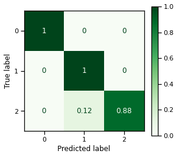
Training Score = 0.96
Test Score = 0.95
Text Classification with Naive Bayes#
Where \(P(\text{Word | Spam})\) is
“However, this formulation has a problem: what if you encounter a word in the test set that was not present in the training set? This new word would have a frequency of zero! To effectively counteract these issues, Laplacian smoothing is often used giving:”
Laplacian smoothing:
⏰ Activity Continued: Finding Trump with Naive Bayes#
## Use text pipe to get X_train,X_test
X_train_pipe = text_pipe.fit_transform(X_train)
X_test_pipe = text_pipe.transform(X_test)
X_train_pipe
<422x2127 sparse matrix of type '<class 'numpy.float64'>'
with 7709 stored elements in Compressed Sparse Row format>
## Make a naive bayes classifier
nb_classifier = MultinomialNB()#alpha = 1.0e-08)
nb_classifier.fit(X_train_pipe,y_train)
evaluate_classification(nb_classifier,X_test_pipe,y_test, X_train=X_train_pipe,
y_train=y_train)
precision recall f1-score support
0 0.98 0.68 0.80 72
1 0.82 0.99 0.90 109
accuracy 0.87 181
macro avg 0.90 0.84 0.85 181
weighted avg 0.89 0.87 0.86 181
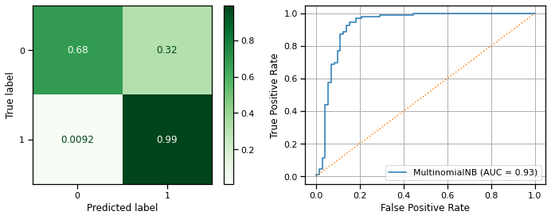
Training Score = 0.92
Test Score = 0.87
### Make a new pipeline for bayes
nb_pipe = Pipeline(steps=[
('text_pipe',text_pipe),
('clf',MultinomialNB())
])
params = {'text_pipe__tf_transformer__use_idf':[True, False],
'text_pipe__tf_transformer__norm':['l2','l1'],
'text_pipe__tf_transformer__use_idf':[True,False],
'text_pipe__tf_transformer__smooth_idf':[True,False],
# 'text_pipe__count_vectorizer__tokenizer':[
# # None,
# TweetTokenizer(preserve_case=True).tokenize,
# TweetTokenizer(preserve_case=False).tokenize],
'text_pipe__count_vectorizer__stop_words':[None,stopwords_list],
# 'text_pipe__count_vectorizer__max_df':[1.0,0.95,0.9],
# 'text_pipe__count_vectorizer__min_df':[1,2,3],
'clf__alpha':[0, 1],
'clf__fit_prior':[True,False]}
## Make and fit grid
grid = GridSearchCV(nb_pipe,params,cv=3,scoring='recall_macro',
verbose=2, n_jobs=-1)
grid.fit(X_train,y_train)
## Display best params
grid.best_params_
Fitting 3 folds for each of 64 candidates, totalling 192 fits
[Parallel(n_jobs=-1)]: Using backend LokyBackend with 12 concurrent workers.
[Parallel(n_jobs=-1)]: Done 17 tasks | elapsed: 0.2s
[Parallel(n_jobs=-1)]: Done 192 out of 192 | elapsed: 1.1s finished
{'clf__alpha': 1,
'clf__fit_prior': False,
'text_pipe__count_vectorizer__stop_words': None,
'text_pipe__tf_transformer__norm': 'l2',
'text_pipe__tf_transformer__smooth_idf': True,
'text_pipe__tf_transformer__use_idf': False}
## Evluate the best_estimator
best_pipe = grid.best_estimator_
evaluate_classification(best_pipe,X_test,y_test,X_train=X_train,y_train=y_train)
precision recall f1-score support
0 0.96 0.76 0.85 72
1 0.86 0.98 0.92 109
accuracy 0.90 181
macro avg 0.91 0.87 0.89 181
weighted avg 0.90 0.90 0.89 181
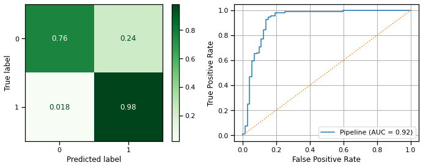
Training Score = 0.90
Test Score = 0.90
X_train_pipe.shape
(422, 2127)
APPENDIX#
raise Exception("Stop!")
T-SNE (for Student Question)#
X_train_pipe.todense()
from sklearn.manifold import TSNE
from mpl_toolkits.mplot3d import Axes3D
## TSNE For Visualizing High Dimensional Data
t_sne_object_3d = TSNE(n_components=3)
transformed_data_3d = t_sne_object_3d.fit_transform(X_train_pipe)
transformed_data_3d
## Separate into Trump/Not Trump
trump = transformed_data_3d[y_train==1]
not_trump = transformed_data_3d[y_train==0]
fig = plt.figure(figsize=(20,10))
ax = fig.add_subplot(projection='3d')
ax.scatter(trump[:,0],trump[:,1],
trump[:,2],c='orange',label='Trump')
ax.scatter(not_trump[:,0],not_trump[:,1],
not_trump[:,2],c='black',label='Not Trump')
ax.legend()
ax.view_init(30, 10)
fig.tight_layout()
## TSNE For Visualizing High Dimensional Data
t_sne_object_2d = TSNE(n_components=2)
transformed_data_2d = t_sne_object_2d.fit_transform(X_train_pipe)
## Separate into Trump/Not Trump
trump = transformed_data_2d[y_train==1]
not_trump = transformed_data_2d[y_train==0]
fig,ax = plt.subplots(figsize=(20,10))
ax.scatter(trump[:,0],trump[:,1],c='orange',label='Trump')
ax.scatter(not_trump[:,0],not_trump[:,1],c='black',label='Not Trump')
ax.legend()
fig.tight_layout()
Interactive Tokenizer Example#
from nltk import word_tokenize
from ipywidgets import interact
@interact
def tokenize_tweet(i=(0,len(corpus)-1)):
from nltk.corpus import stopwords
import string
from nltk import word_tokenize,regexp_tokenize
print(f"- Tweet #{i}:\n")
print(corpus[i],'\n')
tokens = word_tokenize(corpus[i])
# Get all the stop words in the English language
stopwords_list = stopwords.words('english')
stopwords_list += string.punctuation
stopped_tokens = [w.lower() for w in tokens if w not in stopwords_list]
print(tokens,end='\n\n')
print(stopped_tokens)
NLP Vocabulary#
Corpus
Body of text
Bag of Words
Collection of all words from a corpus.
Regular Expressions#
Use https://regex101.com/ to test out regular expressions
Context-Free Grammers and POS Tagging#

Syntax and Meaning Can be Difficult for Computers#
In English, sentences consist of a Noun Phrase followed by a Verb Phrase, which may optionally be followed by a Prepositional Phrase.
This seems simple, but it gets more tricky when we realize that there is a recursive structure to these phrases.
A noun phrase may consist of multiple smaller noun phrases, and in some cases, even a verb phrase.
Similarly, a verb phrase can consist of multiple smaller verb phrases and noun phrases, which can themselves be made up of smaller noun phrases and verb phrases.
This leads levels of ambiguity that can be troublesome for computers. NLTK’s documentation explains this by examining the classic Groucho Marx joke:
“While hunting in Africa, I shot an elephant in my pajamas. How he got into my pajamas, I don’t know.”

[MANUAL] Gaussian Naive Bayes [Non-Text Data]#
Gaussian Naive Bayes makes the assumption that our probabilities follow a normal distribution.
It uses the Probability Density Function for a Normal (Gaussian) Distribution to get point estimates of the probabilities.
Note: above we used the normal distribution probability density function to estimate likelihood, which is essentiall what Guassian Naive Bayes does!!
from scipy import stats
from sklearn import datasets
iris = datasets.load_iris()
X = pd.DataFrame(iris.data)
X.columns = iris.feature_names
y = pd.DataFrame(iris.target)
y.columns = ['Target']
df = pd.concat([X, y], axis=1)
df.head()
target_map = dict(zip([0,1,2],iris.target_names))
target_map
df['Target'].map(target_map).value_counts()
Suppose we have three competing hypotheses \(\{versicolor, virginica, setosa\}\) that would explain our evidence \(e\).
Then we could use Bayes’s Theorem to calculate the posterior probabilities for each of these three:
\(\large P(versicolor|e) = \frac{P(versicolor)P(e|versicolor)}{P(e)}\)
\(\large P(virginica|e) = \frac{P(virginica)P(e|virginica)}{P(e)}\)
\(\large P(h_3|e) = \frac{P(h_3)P(e|h_3)}{P(e)}\)
X_tr, X_te,y_tr,y_te = train_test_split(X,y)
X_tr.head()
aggs = df.groupby('Target').agg(['mean', 'std'])
aggs
from sklearn.naive_bayes import GaussianNB
bayes = GaussianNB()
bayes.fit(X_tr,y_tr)
evaluate_classification(bayes,X_te,y_te,X_train=X_tr,y_train=y_tr)
def p_x_given_class(obs_row, feature, class_):
mu = aggs[feature]['mean'][class_]
std = aggs[feature]['std'][class_]
# A single observation
obs = df.iloc[obs_row][feature]
p_x_given_y = stats.norm.pdf(obs, loc=mu, scale=std)
return p_x_given_y
# Notice how this is not a true probability; you can get values > 1
p_x_given_class(0, 'petal length (cm)', 0)
row = 100
c_probs = []
for c in range(3):
# Initialize probability to relative probability of class
p = len(df[df['Target'] == c])/len(df)
for feature in X.columns:
p *= p_x_given_class(row, feature, c)
# Update the probability using the point estimate for each feature
c_probs.append(p)
c_probs
def predict_class(row):
c_probs = []
for c in range(3):
# Initialize probability to relative probability of class
p = len(df[df['Target'] == c])/len(df)
for feature in X.columns:
p *= p_x_given_class(row, feature, c)
c_probs.append(p)
return np.argmax(c_probs)
row = 0
df.iloc[row]
predict_class(row)
df['Predictions'] = [predict_class(row) for row in df.index]
df['Correct?'] = df['Target'] == df['Predictions']
df['Correct?'].value_counts(normalize=True)
Avoiding “underflow”#
“…repeatedly multiplying small probabilities can lead to underflow; rounding to zero due to numerical approximation limitations. As such, a common alternative is to add the logarithms of the probabilities as opposed to multiplying the raw probabilities themselves…”
$\( \large e^x \cdot e^y = e^{x+y}\)\( \)\( \large log_{e}(e)=1 \)\( \)\(\large e^{log(x)} = x\)$
With that, here’s an updated version of the function using log probabilities to avoid underflow:
def predict_class_log(row):
c_probs = []
for c in range(3):
# Initialize probability to relative probability of class
p = len(df[df['Target'] == c])/len(df)
for feature in X.columns:
p += np.log(p_x_given_class(row, feature, c))
c_probs.append(p)
return np.argmax(c_probs)
row = 0
df.iloc[row]
print(predict_class_log(row))
df['Predictions'] = [predict_class_log(row) for row in df.index]
df['Correct?'] = df['Target'] == df['Predictions']
df['Correct?'].value_counts(normalize=True)